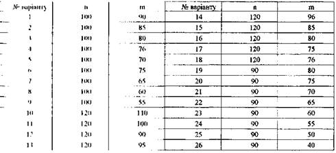

ЗАВДАННЯ ДЛЯ САМОСТІЙНОЇ РОБОТИ № З
Студент знає т з п питань програми. Кожен екзаменаційний білет містить чотири питання. Знайти імовірність того, що:
а)студент знає тільки три питання;
б) більше трьох питань;
в) не менше трьох питань;
і) менше трьох питань;
д) не більше трьох питань; Вишами і и найбільш імовірне число питань із білета, які студент знає. Значення віяти з таблиці.
